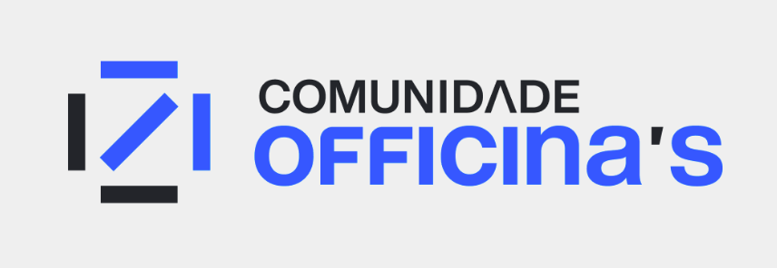

🐧 Bem-vindo à Comunidade Officinas

📚 Este é o portal de conhecimento técnico e colaborativo da Comunidade Officinas, voltado ao aprendizado, prática e documentação de tecnologias voltadas ao uso de Linux, servidores, infraestrutura de rede e muito mais.
👉 Objetivos
-
RESPONSABILIDADE SOCIAL- Promover o Software Livre com todo o entusiasmo que vem da criação e edição de arquivos e os resultados práticos desse trabalho, proporcionando liberdade, transparência, estabilidade e segurança ao parque de TI regional. -
INCLUSÃO DIGITAL- A possibilidade de crescimento comunitário aliado a capacidade de impactar pessoas, á que percebam novas possibilidades no futuro. -
FORMAÇÃO PROFISSIONAL- Possibilitar a formação de novos gestores de TI á médio e longo prazo. -
TRANSPARÊNCIA- Incentivando a adoção de ferramentas com código fonte auditável, para uso na máquina pública ou privada.
Abaixo você encontrará conteúdos organizados em módulos, tutoriais práticos, configurações de serviços e materiais de apoio.
📂 Visão Geral
🛠️ Servidores
- DC1 Compilado
- DC1 Binarios
- DC1 Rocky
- DC2 Rocky
- DHCP Server
- DNS Server
- Fileserver Debian binario
- Fileserver Rocky
- Fileserver Rocky Linux
- Firewall Server
- MkDocs Server
- NFS Server
- Fileserver sem RSAT
- RAID
📟 Sistema Operacional
🔩 Módulos
- Módulo 103.1 - Aula 00
- Módulo 103.1 - Aula 01
- Módulo 103.1 - Aula 02
- Módulo 103.1 - Aula 03
- Módulo 103.1 - Aula 04
- Módulo 103.1 - Aula 05
- Módulo 103.2 - Aula 01
🔒 Permissões e Usuários
- Permissões Linux - Parte 01
- Permissões Linux - Parte 02
- Usuários e Grupos - Parte 01
- Usuários e Grupos - Parte 02
🔧 Outros
🧑💻 Propostas
-
LABORATÓRIOprático com computadores, Sistema operacional, aplicações e arquivos de configuração, no melhor estilo "mão na massa". -
DOCUMENTAÇÃOteórica de apoio, atualizada, formatada e disponibilizada para estudos dentro ou fora da sala. -
INSTRUTORdisponível á turma de alunos, para subirmos juntos cada degrau dessa tremenda escalada! -
SOFTWARE LIVREaliando os conceitos de diversão e responsabilidade.

Visite a página do Linux Professional Institute aqui.
Baixe uma cópia do Debian Linux 🐧

O SENHOR é quem dá sabedoria e o entendimento procede dEle! (Prov 2:6) 💡